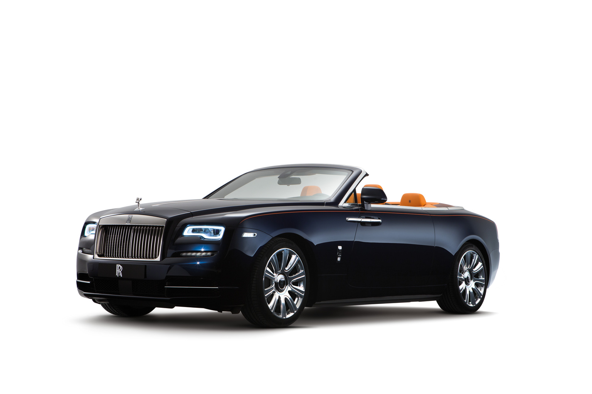
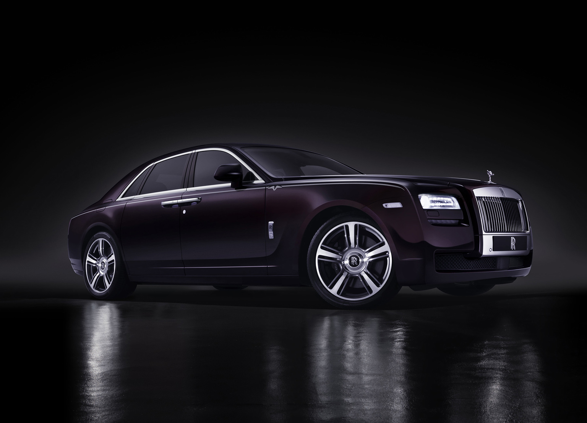
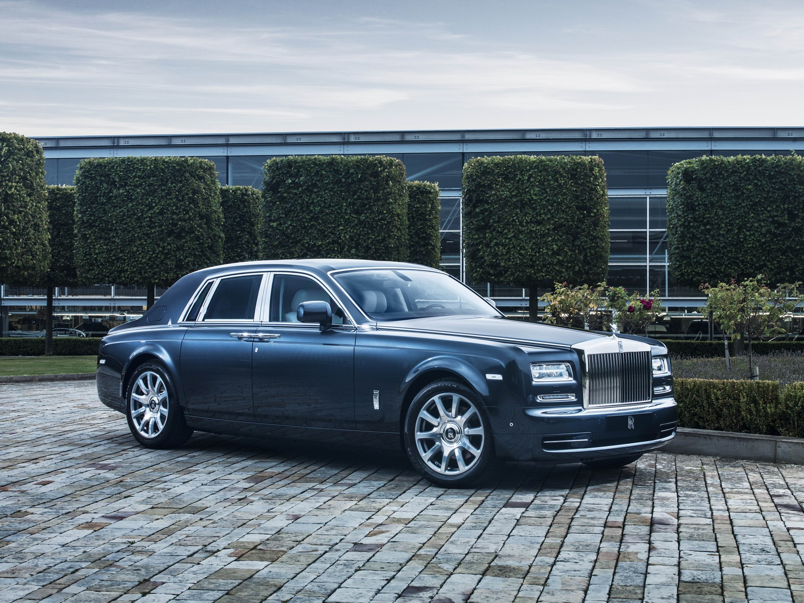
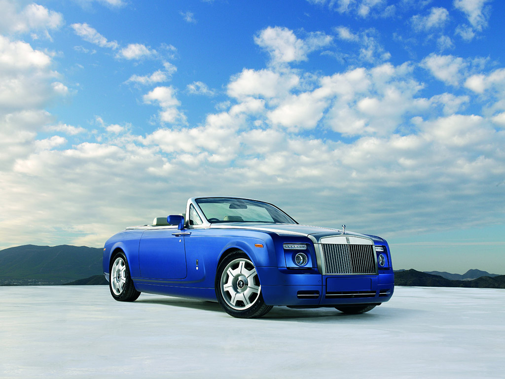
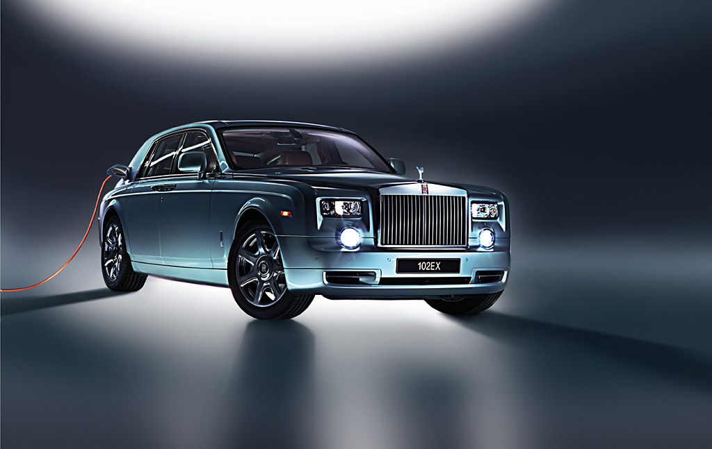

When Henry Royce was designing the first Rolls‑Royce, a friend advised him to “turn out a reliable car at a
low price”. But Royce had other ideas. He sought to turn out “the best motor car in the world regardless of
cost”. More than 100 years later, that same desire for perfection is the driving force behind Rolls‑Royce
Motor Cars.
Since 1904, we’ve created instantly recognisable motor cars that have made the marque an icon all over the
world.
With a shared ambition to make the future of motoring extraordinary, the Honourable Charles Rolls and Sir
Henry Royce joined forces in 1904. Despite being from very different backgrounds, the founders of
Rolls‑Royce Motor Cars formed an unlikely partnership – one forged from a shared passion for engineering and
a desire to create the Best Car in the World.
Rolls and Royce first met on 4 May 1904 in Manchester. Within minutes of seeing Royce’s twin-cylinder 10hp,
Rolls knew he had found what he was looking for. After taking the motor car for a drive, Rolls agreed on the
spot to sell as many motor cars as Royce could build, under the name Rolls‑Royce.
One of Johnson’s early adverts for the 40/50hp motor car promoted it as: ‘The six-cylinder Rolls‑Royce – not
one of the best, but the Best Car in the World.’ In that moment, he had introduced the phrase that would
forever be associated with Rolls‑Royce.
Rolls‑Royce produced the 1907 Silver Ghost, the motor car that founded the marque’s legendary status.
After faultlessly completing the 1913 Alpine Trial – a 14,371-mile drive through some of the toughest
mountain terrain – the Silver Ghost had demonstrated such a level of comfort and reliability that critics
named it ‘The Best Car in the World’. The rest as they say is history.

Rolls Royce Dawn
Fresh from the hugely successful Digital Dawn online launch on Tuesday 8 September 2015, which saw the
new Rolls-Royce Dawn’s debut trending #1 worldwide on Google and watched by 4,000 media around the world
– the new benchmark in open-top luxury motoring will make its World Premiere at the Frankfurt
International Motor Show on Tuesday 15 September 2015.

Rolls-Royce Ghost V-Specification
At the heart of the Ghost’s driving experience is its hallmark V12 engine. Acceleration is delivered with
a characteristic immediacy and smoothness, propelling occupants from 0 to 60 mph in just 4.7 seconds
with 80% of power available from idle. This unique powertrain is celebrated with a 30bhp / 22kw power
increase on all Ghost V-Specification motor cars.

Rolls-Royce Phantom Metropolitan Collection
The Phantom Metropolitan Collection pays homage to the world’s great metropolises through the meticulous
application of marquetry – the art of inlaying small pieces of wood veneer to form decorative motifs.
When open, Phantom’s signature picnic table presents occupants with an elevated view of the city,
created through the expert application of 500 individual wood veneer pieces. Indeed, the process of
hand-cutting, colouring, shaping and applying is so complex these unique objects d’art take an expert
wood craftsperson several days to complete. On closing the tables, a different perspective of the
cityscape is offered – reflecting the view one gets when effortlessly travelling in the rear of a
Phantom.

Rolls-Royce Phantom Drophead Coupé
On the move, the purpose-designed 6.75-litre V12 engine provides huge reserves of power and torque. The Rolls-Royce Phantom will accelerate from 0-60 mph in 5.7 seconds (0-100 kph 5.9 seconds) and on to a limited top speed of 149 mph (240 kph).
Behind the wheel, the low-down torque wafts the Phantom swiftly yet effortlessly from tick-over. Peak torque is 720 Nm (531 lb ft) at 3500 rpm, but more importantly 75 per cent of that total is developed at just 1000 rpm. Maximum power is 460 PS (338 kW).

Rolls-Royce 102EX
Rolls-Royce Motor Cars proudly presents 102EX, a car that represents one of the most significant initiatives taken by the company in recent years. It is the world’s first battery electric vehicle for the ultra-luxury segment and continues a tradition of experimental cars running through the model generations.Rolls-Royce produces cars that represent the pinnacle in luxurious motoring for the world’s most discerning customers. However, the company also recognises the need to look to the future and to plan for long-term sustainable growth. An investigation into alternative drive-train options is an important step in that process.

2013 Rolls-Royce Celestial Phantom
Reflecting the new world in which we live, this pinnacle family of cars – including Phantom Saloon, Phantom Drophead Coupé and Phantom Coupé – have been thoughtfully updated with contemporary yet timeless design enhancements that frame the introduction of cutting-edge technologies which significantly improve the car’s drive-train, ease-of-use and connectivity.
“From launch in 2003, the Rolls-Royce Phantom established itself as the benchmark in automotive luxury, a reputation it has held ever since,” said Torsten Müller-Ötvös, CEO of Rolls-Royce Motor Cars. “These cars are timeless in their appeal, but technology moves rapidly and we cannot afford to stand still.


.jpeg "Porsche Macan GTS (2022 MY)")